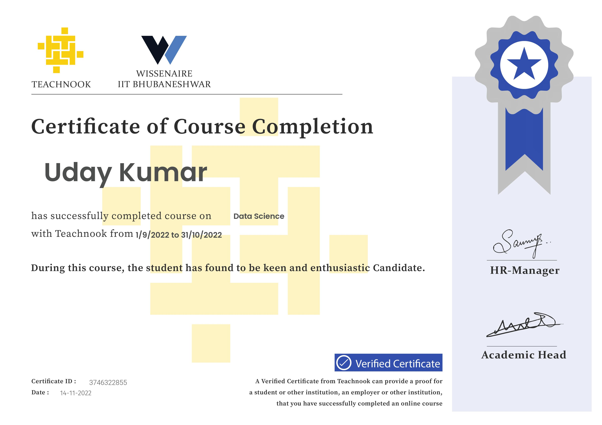

About Me
I am a data-focused professional with an engineering foundation, skilled in Python, SQL, and MATLAB. My interests lie in turning raw data into actionable solutions using analytics and machine learning models.
Skills
Python
SQL
MATLAB
Pandas / NumPy
scikit-learn / SHAP
Tableau / Power BI
ARIMA / Prophet
ANN / CNN / CART
Projects

Air Pollution Dispersion
Forecasted pollutant spread using ANN, CNN, and CART in MATLAB
View Project


Education
B.Tech – Civil & Environmental Engineering
Birla Institute of Technology, Mesra – CGPA: 80.6%
HSC – 84.2% | SSC – 82.67%
Certification

Data Science Course – Teachnook & Wissenaire IIT Bhubaneswar
Completed from 01/09/2022 to 31/10/2022
Internships
NHAI Ranchi – June 2024
Conducted site surveys and supported bridge alignment and supervision activities